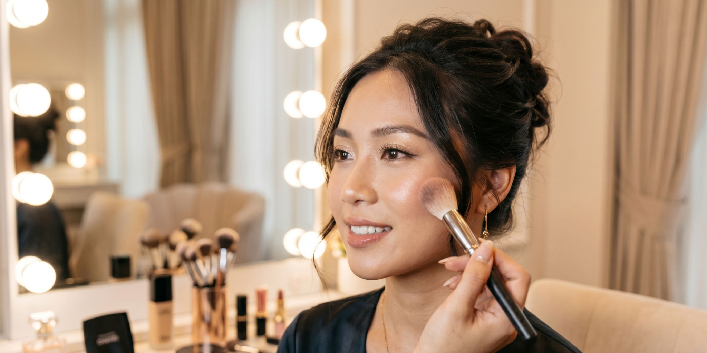

Bạn đã từng makeup thật xinh ở nhà, nhưng đến lúc lên hình kỷ yếu hay vào tiệc được một tiếng thì lớp nền đã mốc, mũi bóng dầu, son thì trôi gần hết? Đó là vì trang điểm dự tiệc và makeup chụp ảnh có “luật chơi” khác hẳn lớp trang điểm đi làm mỗi ngày. Trong bài này, mình — Lily Chen — sẽ chia sẻ cách tự makeup dự tiệc và kỷ yếu sao cho đẹp tự nhiên, bám lâu suốt buổi và đặc biệt là lên ảnh chuẩn từng khung hình.
Makeup dự tiệc và kỷ yếu khác makeup hằng ngày ở đâu?

Nhiều bạn nghĩ cứ makeup quen tay là dự tiệc hay chụp kỷ yếu cũng ổn. Thực tế không phải vậy. Có 3 yếu tố khiến lớp trang điểm dự tiệc và kỷ yếu cần “nâng cấp” so với lớp trang điểm thường ngày: thời gian giữ lâu, ánh đèn mạnh và ống kính máy ảnh.
Ánh đèn flash và đèn studio thường làm lớp makeup “bay màu” trên ảnh — mặt trông nhợt hơn, đường nét mờ đi. Ngược lại, ngoài đời nhìn vừa mắt thì lên ảnh lại có thể thấy hơi nhạt. Đó là lý do makeup chụp ảnh cần đậm hơn một nhịp, đặc biệt ở phần mày, mắt và má.
Bảng dưới đây giúp bạn hình dung nhanh sự khác nhau:
| Tiêu chí | Makeup hằng ngày | Makeup dự tiệc & kỷ yếu |
|---|---|---|
| Độ bám | 4–6 tiếng là đủ | 8–10 tiếng, chịu được mồ hôi |
| Lớp nền | Mỏng, nhẹ | Vừa phải + khóa phấn phủ |
| Màu má, mắt | Nhạt, tự nhiên | Đậm hơn 1 nhịp để lên ảnh |
| Lông mày | Tự nhiên | Rõ nét, có khung |
| Son | Tone nhẹ | Tone rõ, lâu trôi |
Hiểu được sự khác biệt này rồi, bạn sẽ biết vì sao từng bước dưới đây lại quan trọng.
Chuẩn bị da và lớp nền — bước quyết định 80% độ bền
Mình hay nói với học viên: một lớp trang điểm dự tiệc đẹp hay không, 80% nằm ở khâu chuẩn bị da. Da khô mà đánh nền dày sẽ mốc; da dầu mà bỏ qua bước kiềm dầu thì 2 tiếng sau là bóng nhẫy.
Quy trình chăm da trước khi makeup nên có đủ: rửa mặt sạch, toner, dưỡng ẩm và kem chống nắng. Nếu da bạn thuộc loại dầu, hãy chọn kem dưỡng mỏng nhẹ và đợi da “ăn” dưỡng khoảng 5 phút rồi mới đánh nền. Bạn có thể tham khảo thêm các bước chăm sóc da trước khi trang điểm từ Vinmec để hiểu kỹ hơn vì sao bước nền da lại quan trọng đến vậy.
Sau bước dưỡng, đừng quên kem lót (primer). Đây chính là “chìa khóa” giúp lớp nền bám lâu mà ít bạn để ý:
- Da dầu, lỗ chân lông to → chọn primer kiềm dầu, kết cấu silicone.
- Da khô → chọn primer cấp ẩm, có độ ẩm mượt.
- Da xỉn màu → primer tông tím hoặc hồng giúp da tươi lên trong ảnh.
Khi nền da đã “chuẩn”, lớp makeup tiếp theo sẽ bám đẹp và đều màu hơn rất nhiều.
6 bước makeup dự tiệc giữ lâu suốt buổi
Đây là quy trình mình hướng dẫn cho buổi tiệc tối, sự kiện hay đi ăn cưới — nơi bạn cần lớp makeup trụ được nhiều giờ liền:
- Đánh nền 2 lớp mỏng thay vì 1 lớp dày. Lớp đầu tán thật mỏng bằng mút ẩm, đợi khô rồi mới phủ lớp thứ hai vào vùng cần che. Hai lớp mỏng luôn bám lâu và tự nhiên hơn một lớp dày.
- Che khuyết điểm có chọn lọc. Chỉ chấm che khuyết điểm vào quầng thâm, nốt mụn — không quét cả mặt.
- Khóa nền bằng phấn phủ. Đây là bước bắt buộc với makeup dự tiệc. Phủ một lớp phấn mỏng, tập trung vùng chữ T để kiềm dầu.
- Tạo khối và má hồng đậm hơn thường lệ. Dưới ánh đèn, má hồng nhạt sẽ “biến mất”, nên hãy lên màu rõ hơn một nhịp.
- Mắt và mày sắc nét. Kẻ mày có khung, mắt nên có lớp phấn nâu hoặc kẻ mắt mảnh để mắt “ăn đèn”.
- Son lì hoặc son lâu trôi, dặm lại sau khi ăn uống. Tip nhỏ: thoa son xong dùng một lớp phấn mỏng dặm qua môi để son bám lâu hơn.
Làm đúng 6 bước này, lớp trang điểm của bạn sẽ giữ được vẻ tươi tắn gần như suốt buổi.
Makeup kỷ yếu lên ảnh chuẩn: mẹo riêng cho chụp tập thể
Makeup kỷ yếu có một đặc thù: bạn chụp ảnh tập thể, dưới nắng hoặc đèn mạnh, và lên hình cùng cả lớp. Vì vậy makeup kỷ yếu cần “lên ảnh” hơn là “nhìn ngoài đời”, nhưng vẫn phải trong trẻo, hợp tuổi đôi mươi chứ không già dặn như makeup cô dâu.
Vài mẹo mình thường dặn các bạn sinh viên trước buổi chụp:
- Tông nền sáng hơn da thật nửa tông, vì máy ảnh và đèn flash thường làm da tối đi một chút.
- Má hồng và son tươi (cam đào, hồng baby) để khuôn mặt rạng rỡ, trẻ trung trong ảnh.
- Hạn chế nhũ mắt quá lấp lánh — dưới đèn flash dễ bị lóa, làm mắt trông “ướt”.
- Kẻ mày rõ khung vì mày là phần dễ “bay” nhất khi lên hình.
- Mang theo giấy thấm dầu và son để dặm lại giữa các lượt chụp.
Nếu bạn ở Bình Dương và muốn có một lớp makeup kỷ yếu vừa lên ảnh đẹp vừa bền cả ngày dài chạy nắng, việc nắm vững kỹ thuật nền và khóa lớp makeup sẽ giúp bạn tự tin hơn rất nhiều — thay vì phụ thuộc hoàn toàn vào tiệm. Đây cũng là điều nhiều bạn học viên tại Thủ Dầu Một chia sẻ với mình sau khi tự makeup được cho cả nhóm bạn đi chụp kỷ yếu. Nếu bạn quan tâm chuyện học bài bản ngay tại địa phương, mình có chia sẻ riêng trong bài học makeup ở Bình Dương.
4 lỗi khiến lớp makeup mau trôi, mốc và lệch tông
Trong các buổi học gần đây, mình thấy đa số bạn mới đều mắc ít nhất một trong bốn lỗi sau khi tự makeup cho tiệc hoặc kỷ yếu:
- Bỏ qua bước dưỡng và primer → nền không có “điểm bám”, trôi rất nhanh.
- Đánh nền quá dày → vài tiếng sau là mốc, đổ dầu, in lằn trên ảnh.
- Chọn sai tông nền → mặt một màu, cổ một màu, lên ảnh lộ rõ.
- Quên khóa phấn và quên mang đồ dặm → giữa buổi tiệc không có gì cứu lớp makeup.
Tin tốt là cả bốn lỗi này đều sửa được chỉ sau vài lần thực hành đúng cách. Quan trọng là bạn hiểu vì sao mỗi bước tồn tại, chứ không chỉ làm theo máy móc.
Tự makeup hay nên đi học một khóa bài bản?
Với một buổi tiệc nhẹ hay một lần chụp ảnh, bạn hoàn toàn có thể tự makeup cho buổi tiệc theo hướng dẫn trên. Nhưng nếu bạn muốn lần nào makeup cũng đẹp ổn định — biết chọn đúng tông nền cho da mình, biết xử lý khi da đổ dầu, biết tự tin makeup cho cả những dịp quan trọng — thì học một khóa bài bản sẽ tiết kiệm cho bạn rất nhiều thời gian mò mẫm.
Tại Lily Chen Makeup Academy, lớp trang điểm cá nhân được thiết kế đúng theo nhu cầu này: học để tự makeup cho chính mình ở mọi dịp, từ đi làm, đi tiệc đến chụp kỷ yếu. Lớp tối đa 5 học viên, 90% thời lượng là thực hành trên gương mặt thật, nên bạn được mình cầm tay chỉnh từng nét. Bạn có thể xem chi tiết khóa trang điểm cá nhân nếu muốn makeup đẹp một cách chủ động, không còn lo lớp nền trôi giữa buổi.
Câu hỏi thường gặp
Makeup dự tiệc giữ được bao lâu?
Nếu chuẩn bị da kỹ, dùng primer và khóa phấn đúng cách, lớp makeup dự tiệc có thể giữ tươi tắn 8–10 tiếng. Bạn chỉ cần dặm lại son và thấm dầu nhẹ giữa buổi.
Makeup kỷ yếu nên đậm hay nhẹ?
Đậm hơn makeup hằng ngày khoảng một nhịp, tập trung ở mày, má và son. Vì máy ảnh và đèn flash làm màu “bay” bớt, makeup kỷ yếu nhạt quá sẽ trông thiếu sức sống trên ảnh tập thể.
Người mới chưa biết gì có tự makeup dự tiệc được không?
Được, nếu bạn làm chậm và đúng thứ tự các bước. Hãy tập trước ở nhà 1–2 lần để quen tay, đừng để đến sát giờ mới makeup lần đầu.
Makeup kỷ yếu có khác makeup cô dâu hay makeup dự tiệc không?
Có. Makeup cô dâu thường lộng lẫy, lâu trôi cho cả ngày dài. Makeup kỷ yếu trẻ trung, trong trẻo, ưu tiên lên ảnh. Còn trang điểm dự tiệc nằm ở giữa: rõ nét, sang nhưng vẫn nhẹ nhàng.
Cần chuẩn bị những gì để lớp makeup không trôi khi chụp ảnh?
Kem lót phù hợp loại da, phấn phủ khóa nền, son lâu trôi và một bộ đồ dặm nhỏ (giấy thấm dầu, son, phấn) mang theo bên mình.
Tự học makeup mãi không đẹp thì sao?
Đó là lúc một khóa học ngắn sẽ giúp bạn đi đường tắt. Được hướng dẫn trực tiếp và sửa lỗi tại chỗ thường nhanh hơn nhiều so với tự xem video rời rạc.
Kết luận
Makeup dự tiệc và kỷ yếu đẹp không nằm ở việc bạn có nhiều mỹ phẩm đắt tiền, mà ở ba điều: chuẩn bị da và nền thật kỹ, lên màu đủ rõ để “ăn đèn, ăn ảnh”, và khóa lớp makeup để giữ bền suốt buổi. Nắm chắc ba nguyên tắc này, bạn sẽ tự tin với gương mặt của mình trong mọi khung hình.
Nếu bạn muốn makeup đẹp một cách chủ động cho mọi dịp quan trọng — không chỉ riêng tiệc hay kỷ yếu — hãy ghé khóa trang điểm cá nhân của Lily Chen hoặc đọc thêm các bài chia sẻ trên blog để chăm chút cho vẻ ngoài của mình mỗi ngày.